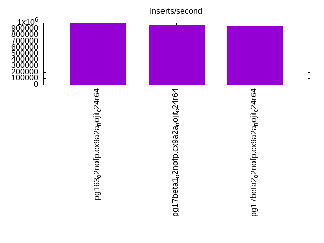

This is a report for the insert benchmark with 1024M docs and 8 client(s). It is generated by scripts (bash, awk, sed) and Tufte might not be impressed. An overview of the insert benchmark is here and a short update is here. Below, by DBMS, I mean DBMS+version.config. An example is my8020.c10b40 where my means MySQL, 8020 is version 8.0.20 and c10b40 is the name for the configuration file.
The test server has is a c2d-standard-30 with HT off, 16 cores, 64G RAM, Ubuntu 22.04 and ext4 using SW RAID 0 and 2 NVMe devices. The benchmark was run with 8 clients and there were 1 or 3 connections per client (1 for queries or inserts without rate limits, 1+1 for rate limited inserts+deletes). It uses 8 table with a table per client. It loads 128M rows per table without secondary indexes, creates 3 secondary indexes per table, then inserts 4m+1m rows per table with a delete per insert to avoid growing the table. It then does 6 read+write tests for 1800s each that do queries as fast as possible with 100,100,500,500,1000,1000 inserts/s and the same for deletes/s per client concurrent with the queries. The database is larger than memory. Clients and the DBMS share one server. The per-database configs are in the per-database subdirectories here.
The tested DBMS are:
The numbers are inserts/s for l.i0, l.i1 and l.i2, indexed docs (or rows) /s for l.x and queries/s for qr100, qp100 thru qr1000, qp1000" The values are the average rate over the entire test for inserts (IPS) and queries (QPS). The range of values for IPS and QPS is split into 3 parts: bottom 25%, middle 50%, top 25%. Values in the bottom 25% have a red background, values in the top 25% have a green background and values in the middle have no color. A gray background is used for values that can be ignored because the DBMS did not sustain the target insert rate. Red backgrounds are not used when the minimum value is within 80% of the max value.
| dbms | l.i0 | l.x | l.i1 | l.i2 | qr100 | qp100 | qr500 | qp500 | qr1000 | qp1000 |
|---|---|---|---|---|---|---|---|---|---|---|
| pg163_o2nofp.cx9a2a_nojit_c24r64 | 992248 | 1358090 | 26424 | 1665 | 98760 | 4801 | 92471 | 4120 | 76385 | 3341 |
| pg17beta1_o2nofp.cx9a2a_nojit_c24r64 | 955224 | 1389417 | 26936 | 1314 | 99126 | 4790 | 92497 | 4099 | 75057 | 3319 |
| pg17beta2_o2nofp.cx9a2a_nojit_c24r64 | 954334 | 1391304 | 25932 | 1304 | 99434 | 4783 | 92557 | 4096 | 75527 | 2962 |
This table has relative throughput, throughput for the DBMS relative to the DBMS in the first line, using the absolute throughput from the previous table. Values less than 0.95 have a yellow background. Values greater than 1.05 have a blue background.
| dbms | l.i0 | l.x | l.i1 | l.i2 | qr100 | qp100 | qr500 | qp500 | qr1000 | qp1000 |
|---|---|---|---|---|---|---|---|---|---|---|
| pg163_o2nofp.cx9a2a_nojit_c24r64 | 1.00 | 1.00 | 1.00 | 1.00 | 1.00 | 1.00 | 1.00 | 1.00 | 1.00 | 1.00 |
| pg17beta1_o2nofp.cx9a2a_nojit_c24r64 | 0.96 | 1.02 | 1.02 | 0.79 | 1.00 | 1.00 | 1.00 | 0.99 | 0.98 | 0.99 |
| pg17beta2_o2nofp.cx9a2a_nojit_c24r64 | 0.96 | 1.02 | 0.98 | 0.78 | 1.01 | 1.00 | 1.00 | 0.99 | 0.99 | 0.89 |
This lists the average rate of inserts/s for the tests that do inserts concurrent with queries. For such tests the query rate is listed in the table above. The read+write tests are setup so that the insert rate should match the target rate every second. Cells that are not at least 95% of the target have a red background to indicate a failure to satisfy the target.
| dbms | qr100.L1 | qp100.L2 | qr500.L3 | qp500.L4 | qr1000.L5 | qp1000.L6 |
|---|---|---|---|---|---|---|
| pg163_o2nofp.cx9a2a_nojit_c24r64 | 796 | 796 | 3980 | 3980 | 7960 | 7960 |
| pg17beta1_o2nofp.cx9a2a_nojit_c24r64 | 796 | 796 | 3980 | 3980 | 7960 | 7960 |
| pg17beta2_o2nofp.cx9a2a_nojit_c24r64 | 796 | 796 | 3978 | 3978 | 7960 | 7960 |
| target | 800 | 800 | 4000 | 4000 | 8000 | 8000 |
l.i0: load without secondary indexes. Graphs for performance per 1-second interval are here.
Average throughput:
Insert response time histogram: each cell has the percentage of responses that take <= the time in the header and max is the max response time in seconds. For the max column values in the top 25% of the range have a red background and in the bottom 25% of the range have a green background. The red background is not used when the min value is within 80% of the max value.
| dbms | 256us | 1ms | 4ms | 16ms | 64ms | 256ms | 1s | 4s | 16s | gt | max |
|---|---|---|---|---|---|---|---|---|---|---|---|
| pg163_o2nofp.cx9a2a_nojit_c24r64 | 97.081 | 2.825 | 0.050 | 0.022 | 0.006 | 0.017 | 0.929 | ||||
| pg17beta1_o2nofp.cx9a2a_nojit_c24r64 | 91.631 | 8.274 | 0.045 | 0.027 | 0.007 | 0.017 | nonzero | 1.165 | |||
| pg17beta2_o2nofp.cx9a2a_nojit_c24r64 | 91.333 | 8.577 | 0.041 | 0.026 | 0.007 | 0.017 | 0.918 |
Performance metrics for the DBMS listed above. Some are normalized by throughput, others are not. Legend for results is here.
ips qps rps rmbps wps wmbps rpq rkbpq wpi wkbpi csps cpups cspq cpupq dbgb1 dbgb2 rss maxop p50 p99 tag 992248 0 414 3.3 2308.9 410.9 0.000 0.003 0.002 0.424 87101 71.9 0.088 12 98.0 162.0 6.7 0.929 139850 19885 pg163_o2nofp.cx9a2a_nojit_c24r64 955224 0 403 3.2 2286.6 396.3 0.000 0.003 0.002 0.425 86109 68.5 0.090 11 98.0 162.0 46.3 1.165 133456 19079 pg17beta1_o2nofp.cx9a2a_nojit_c24r64 954334 0 400 3.2 2268.3 395.4 0.000 0.003 0.002 0.424 85828 68.6 0.090 12 98.0 162.0 46.7 0.918 132358 19579 pg17beta2_o2nofp.cx9a2a_nojit_c24r64
l.x: create secondary indexes.
Average throughput:
Performance metrics for the DBMS listed above. Some are normalized by throughput, others are not. Legend for results is here.
ips qps rps rmbps wps wmbps rpq rkbpq wpi wkbpi csps cpups cspq cpupq dbgb1 dbgb2 rss maxop p50 p99 tag 1358090 0 2929 607.9 1461.4 402.8 0.002 0.458 0.001 0.304 21532 25.0 0.016 3 196.7 260.8 4.1 0.051 NA NA pg163_o2nofp.cx9a2a_nojit_c24r64 1389417 0 2914 609.7 1471.6 412.6 0.002 0.449 0.001 0.304 8564 25.0 0.006 3 196.7 260.8 28.2 0.091 NA NA pg17beta1_o2nofp.cx9a2a_nojit_c24r64 1391304 0 2913 609.8 1438.9 413.6 0.002 0.449 0.001 0.304 8637 25.7 0.006 3 196.7 260.8 22.7 0.036 NA NA pg17beta2_o2nofp.cx9a2a_nojit_c24r64
l.i1: continue load after secondary indexes created with 50 inserts per transaction. Graphs for performance per 1-second interval are here.
Average throughput:
Insert response time histogram: each cell has the percentage of responses that take <= the time in the header and max is the max response time in seconds. For the max column values in the top 25% of the range have a red background and in the bottom 25% of the range have a green background. The red background is not used when the min value is within 80% of the max value.
| dbms | 256us | 1ms | 4ms | 16ms | 64ms | 256ms | 1s | 4s | 16s | gt | max |
|---|---|---|---|---|---|---|---|---|---|---|---|
| pg163_o2nofp.cx9a2a_nojit_c24r64 | 0.710 | 84.374 | 14.762 | 0.153 | 0.001 | 0.365 | |||||
| pg17beta1_o2nofp.cx9a2a_nojit_c24r64 | 0.469 | 80.419 | 18.863 | 0.248 | nonzero | 0.326 | |||||
| pg17beta2_o2nofp.cx9a2a_nojit_c24r64 | 0.095 | 83.312 | 16.416 | 0.177 | nonzero | 0.362 |
Delete response time histogram: each cell has the percentage of responses that take <= the time in the header and max is the max response time in seconds. For the max column values in the top 25% of the range have a red background and in the bottom 25% of the range have a green background. The red background is not used when the min value is within 80% of the max value.
| dbms | 256us | 1ms | 4ms | 16ms | 64ms | 256ms | 1s | 4s | 16s | gt | max |
|---|---|---|---|---|---|---|---|---|---|---|---|
| pg163_o2nofp.cx9a2a_nojit_c24r64 | 4.085 | 14.972 | 65.619 | 15.287 | 0.037 | 0.203 | |||||
| pg17beta1_o2nofp.cx9a2a_nojit_c24r64 | 4.476 | 16.601 | 68.533 | 10.308 | 0.082 | 0.253 | |||||
| pg17beta2_o2nofp.cx9a2a_nojit_c24r64 | 3.881 | 15.418 | 67.071 | 13.577 | 0.054 | 0.223 |
Performance metrics for the DBMS listed above. Some are normalized by throughput, others are not. Legend for results is here.
ips qps rps rmbps wps wmbps rpq rkbpq wpi wkbpi csps cpups cspq cpupq dbgb1 dbgb2 rss maxop p50 p99 tag 26424 0 16358 134.8 24201.7 519.0 0.619 5.224 0.916 20.113 42967 44.7 1.626 271 202.0 266.0 48.6 0.365 3099 1898 pg163_o2nofp.cx9a2a_nojit_c24r64 26936 0 17192 160.4 25988.2 551.3 0.638 6.099 0.965 20.960 43316 43.3 1.608 257 201.9 265.9 48.7 0.326 3846 1948 pg17beta1_o2nofp.cx9a2a_nojit_c24r64 25932 0 16140 133.9 24564.0 518.2 0.622 5.287 0.947 20.461 41795 44.0 1.612 271 202.0 266.0 48.7 0.362 3499 2248 pg17beta2_o2nofp.cx9a2a_nojit_c24r64
l.i2: continue load after secondary indexes created with 5 inserts per transaction. Graphs for performance per 1-second interval are here.
Average throughput:
Insert response time histogram: each cell has the percentage of responses that take <= the time in the header and max is the max response time in seconds. For the max column values in the top 25% of the range have a red background and in the bottom 25% of the range have a green background. The red background is not used when the min value is within 80% of the max value.
| dbms | 256us | 1ms | 4ms | 16ms | 64ms | 256ms | 1s | 4s | 16s | gt | max |
|---|---|---|---|---|---|---|---|---|---|---|---|
| pg163_o2nofp.cx9a2a_nojit_c24r64 | 1.027 | 67.061 | 31.898 | 0.011 | 0.002 | 0.001 | 0.177 | ||||
| pg17beta1_o2nofp.cx9a2a_nojit_c24r64 | 1.618 | 69.386 | 28.992 | 0.003 | 0.014 | ||||||
| pg17beta2_o2nofp.cx9a2a_nojit_c24r64 | 0.204 | 66.417 | 33.374 | 0.005 | 0.012 |
Delete response time histogram: each cell has the percentage of responses that take <= the time in the header and max is the max response time in seconds. For the max column values in the top 25% of the range have a red background and in the bottom 25% of the range have a green background. The red background is not used when the min value is within 80% of the max value.
| dbms | 256us | 1ms | 4ms | 16ms | 64ms | 256ms | 1s | 4s | 16s | gt | max |
|---|---|---|---|---|---|---|---|---|---|---|---|
| pg163_o2nofp.cx9a2a_nojit_c24r64 | 0.240 | 3.828 | 0.014 | 46.348 | 49.569 | 0.001 | 0.124 | ||||
| pg17beta1_o2nofp.cx9a2a_nojit_c24r64 | 11.351 | 14.366 | 74.283 | nonzero | 0.124 | ||||||
| pg17beta2_o2nofp.cx9a2a_nojit_c24r64 | 8.799 | 91.200 | 0.001 | 0.125 |
Performance metrics for the DBMS listed above. Some are normalized by throughput, others are not. Legend for results is here.
ips qps rps rmbps wps wmbps rpq rkbpq wpi wkbpi csps cpups cspq cpupq dbgb1 dbgb2 rss maxop p50 p99 tag 1665 0 958 10.9 2014.1 38.0 0.575 6.701 1.210 23.361 9767 35.7 5.866 3430 203.3 267.3 26.4 0.177 305 275 pg163_o2nofp.cx9a2a_nojit_c24r64 1314 0 710 5.9 1553.6 28.9 0.541 4.586 1.182 22.514 6911 32.1 5.259 3909 203.0 267.1 48.7 0.014 1569 1009 pg17beta1_o2nofp.cx9a2a_nojit_c24r64 1304 0 733 6.1 1604.1 29.8 0.562 4.758 1.230 23.435 6755 43.0 5.181 5276 203.3 267.3 48.7 0.012 140 125 pg17beta2_o2nofp.cx9a2a_nojit_c24r64
qr100.L1: range queries with 100 insert/s per client. Graphs for performance per 1-second interval are here.
Average throughput:
Query response time histogram: each cell has the percentage of responses that take <= the time in the header and max is the max response time in seconds. For max values in the top 25% of the range have a red background and in the bottom 25% of the range have a green background. The red background is not used when the min value is within 80% of the max value.
| dbms | 256us | 1ms | 4ms | 16ms | 64ms | 256ms | 1s | 4s | 16s | gt | max |
|---|---|---|---|---|---|---|---|---|---|---|---|
| pg163_o2nofp.cx9a2a_nojit_c24r64 | 99.954 | 0.046 | nonzero | nonzero | 0.004 | ||||||
| pg17beta1_o2nofp.cx9a2a_nojit_c24r64 | 99.955 | 0.045 | nonzero | nonzero | 0.004 | ||||||
| pg17beta2_o2nofp.cx9a2a_nojit_c24r64 | 99.956 | 0.044 | nonzero | nonzero | 0.004 |
Insert response time histogram: each cell has the percentage of responses that take <= the time in the header and max is the max response time in seconds. For max values in the top 25% of the range have a red background and in the bottom 25% of the range have a green background. The red background is not used when the min value is within 80% of the max value.
| dbms | 256us | 1ms | 4ms | 16ms | 64ms | 256ms | 1s | 4s | 16s | gt | max |
|---|---|---|---|---|---|---|---|---|---|---|---|
| pg163_o2nofp.cx9a2a_nojit_c24r64 | 99.976 | 0.024 | 0.019 | ||||||||
| pg17beta1_o2nofp.cx9a2a_nojit_c24r64 | 0.014 | 98.538 | 1.448 | 0.030 | |||||||
| pg17beta2_o2nofp.cx9a2a_nojit_c24r64 | 99.969 | 0.031 | 0.018 |
Delete response time histogram: each cell has the percentage of responses that take <= the time in the header and max is the max response time in seconds. For max values in the top 25% of the range have a red background and in the bottom 25% of the range have a green background. The red background is not used when the min value is within 80% of the max value.
| dbms | 256us | 1ms | 4ms | 16ms | 64ms | 256ms | 1s | 4s | 16s | gt | max |
|---|---|---|---|---|---|---|---|---|---|---|---|
| pg163_o2nofp.cx9a2a_nojit_c24r64 | 61.906 | 38.094 | 0.004 | ||||||||
| pg17beta1_o2nofp.cx9a2a_nojit_c24r64 | 57.073 | 42.927 | 0.003 | ||||||||
| pg17beta2_o2nofp.cx9a2a_nojit_c24r64 | 55.865 | 44.135 | 0.004 |
Performance metrics for the DBMS listed above. Some are normalized by throughput, others are not. Legend for results is here.
ips qps rps rmbps wps wmbps rpq rkbpq wpi wkbpi csps cpups cspq cpupq dbgb1 dbgb2 rss maxop p50 p99 tag 796 98760 540 4.8 458.0 14.5 0.005 0.050 0.575 18.710 371002 48.7 3.757 79 203.3 267.4 48.6 0.004 12438 12019 pg163_o2nofp.cx9a2a_nojit_c24r64 796 99126 534 4.7 458.1 14.6 0.005 0.048 0.575 18.721 371867 48.7 3.751 79 203.1 266.2 48.7 0.004 12483 11976 pg17beta1_o2nofp.cx9a2a_nojit_c24r64 796 99434 541 4.7 452.0 14.5 0.005 0.049 0.568 18.663 372831 48.7 3.750 78 203.3 267.4 48.7 0.004 12578 12147 pg17beta2_o2nofp.cx9a2a_nojit_c24r64
qp100.L2: point queries with 100 insert/s per client. Graphs for performance per 1-second interval are here.
Average throughput:
Query response time histogram: each cell has the percentage of responses that take <= the time in the header and max is the max response time in seconds. For max values in the top 25% of the range have a red background and in the bottom 25% of the range have a green background. The red background is not used when the min value is within 80% of the max value.
| dbms | 256us | 1ms | 4ms | 16ms | 64ms | 256ms | 1s | 4s | 16s | gt | max |
|---|---|---|---|---|---|---|---|---|---|---|---|
| pg163_o2nofp.cx9a2a_nojit_c24r64 | 0.004 | 6.551 | 93.257 | 0.188 | nonzero | 0.020 | |||||
| pg17beta1_o2nofp.cx9a2a_nojit_c24r64 | 0.003 | 6.329 | 93.462 | 0.206 | nonzero | 0.017 | |||||
| pg17beta2_o2nofp.cx9a2a_nojit_c24r64 | 0.003 | 6.254 | 93.568 | 0.175 | 0.010 |
Insert response time histogram: each cell has the percentage of responses that take <= the time in the header and max is the max response time in seconds. For max values in the top 25% of the range have a red background and in the bottom 25% of the range have a green background. The red background is not used when the min value is within 80% of the max value.
| dbms | 256us | 1ms | 4ms | 16ms | 64ms | 256ms | 1s | 4s | 16s | gt | max |
|---|---|---|---|---|---|---|---|---|---|---|---|
| pg163_o2nofp.cx9a2a_nojit_c24r64 | 3.507 | 96.493 | 0.037 | ||||||||
| pg17beta1_o2nofp.cx9a2a_nojit_c24r64 | 3.587 | 96.413 | 0.032 | ||||||||
| pg17beta2_o2nofp.cx9a2a_nojit_c24r64 | 3.601 | 96.399 | 0.031 |
Delete response time histogram: each cell has the percentage of responses that take <= the time in the header and max is the max response time in seconds. For max values in the top 25% of the range have a red background and in the bottom 25% of the range have a green background. The red background is not used when the min value is within 80% of the max value.
| dbms | 256us | 1ms | 4ms | 16ms | 64ms | 256ms | 1s | 4s | 16s | gt | max |
|---|---|---|---|---|---|---|---|---|---|---|---|
| pg163_o2nofp.cx9a2a_nojit_c24r64 | 0.833 | 99.132 | 0.035 | 0.012 | |||||||
| pg17beta1_o2nofp.cx9a2a_nojit_c24r64 | 0.052 | 99.899 | 0.049 | 0.012 | |||||||
| pg17beta2_o2nofp.cx9a2a_nojit_c24r64 | 0.028 | 99.931 | 0.042 | 0.011 |
Performance metrics for the DBMS listed above. Some are normalized by throughput, others are not. Legend for results is here.
ips qps rps rmbps wps wmbps rpq rkbpq wpi wkbpi csps cpups cspq cpupq dbgb1 dbgb2 rss maxop p50 p99 tag 796 4801 39615 312.0 2581.4 30.0 8.251 66.538 3.243 38.547 95454 13.9 19.882 463 203.4 266.9 48.6 0.020 639 288 pg163_o2nofp.cx9a2a_nojit_c24r64 796 4790 39608 311.0 2580.4 30.0 8.270 66.497 3.242 38.548 95341 14.1 19.906 471 203.1 266.2 48.7 0.017 624 272 pg17beta1_o2nofp.cx9a2a_nojit_c24r64 796 4783 39535 310.4 2583.4 30.0 8.267 66.470 3.245 38.574 95155 14.1 19.896 472 203.4 264.4 48.7 0.010 623 288 pg17beta2_o2nofp.cx9a2a_nojit_c24r64
qr500.L3: range queries with 500 insert/s per client. Graphs for performance per 1-second interval are here.
Average throughput:
Query response time histogram: each cell has the percentage of responses that take <= the time in the header and max is the max response time in seconds. For max values in the top 25% of the range have a red background and in the bottom 25% of the range have a green background. The red background is not used when the min value is within 80% of the max value.
| dbms | 256us | 1ms | 4ms | 16ms | 64ms | 256ms | 1s | 4s | 16s | gt | max |
|---|---|---|---|---|---|---|---|---|---|---|---|
| pg163_o2nofp.cx9a2a_nojit_c24r64 | 99.800 | 0.194 | 0.005 | 0.001 | nonzero | nonzero | 0.103 | ||||
| pg17beta1_o2nofp.cx9a2a_nojit_c24r64 | 99.809 | 0.185 | 0.005 | 0.001 | nonzero | nonzero | 0.105 | ||||
| pg17beta2_o2nofp.cx9a2a_nojit_c24r64 | 99.800 | 0.193 | 0.006 | 0.001 | nonzero | nonzero | 0.084 |
Insert response time histogram: each cell has the percentage of responses that take <= the time in the header and max is the max response time in seconds. For max values in the top 25% of the range have a red background and in the bottom 25% of the range have a green background. The red background is not used when the min value is within 80% of the max value.
| dbms | 256us | 1ms | 4ms | 16ms | 64ms | 256ms | 1s | 4s | 16s | gt | max |
|---|---|---|---|---|---|---|---|---|---|---|---|
| pg163_o2nofp.cx9a2a_nojit_c24r64 | 0.001 | 75.533 | 24.460 | 0.007 | 0.092 | ||||||
| pg17beta1_o2nofp.cx9a2a_nojit_c24r64 | 76.226 | 23.762 | 0.011 | 0.084 | |||||||
| pg17beta2_o2nofp.cx9a2a_nojit_c24r64 | 75.311 | 24.674 | 0.015 | 0.087 |
Delete response time histogram: each cell has the percentage of responses that take <= the time in the header and max is the max response time in seconds. For max values in the top 25% of the range have a red background and in the bottom 25% of the range have a green background. The red background is not used when the min value is within 80% of the max value.
| dbms | 256us | 1ms | 4ms | 16ms | 64ms | 256ms | 1s | 4s | 16s | gt | max |
|---|---|---|---|---|---|---|---|---|---|---|---|
| pg163_o2nofp.cx9a2a_nojit_c24r64 | 50.192 | 48.707 | 1.101 | 0.056 | |||||||
| pg17beta1_o2nofp.cx9a2a_nojit_c24r64 | 44.967 | 54.133 | 0.900 | 0.046 | |||||||
| pg17beta2_o2nofp.cx9a2a_nojit_c24r64 | 44.220 | 54.337 | 1.442 | 0.001 | 0.081 |
Performance metrics for the DBMS listed above. Some are normalized by throughput, others are not. Legend for results is here.
ips qps rps rmbps wps wmbps rpq rkbpq wpi wkbpi csps cpups cspq cpupq dbgb1 dbgb2 rss maxop p50 p99 tag 3980 92471 3982 33.8 3578.6 74.8 0.043 0.374 0.899 19.233 338963 52.3 3.666 90 203.6 267.6 48.6 0.103 11667 10484 pg163_o2nofp.cx9a2a_nojit_c24r64 3980 92497 3976 33.7 3579.0 74.6 0.043 0.373 0.899 19.181 337593 52.4 3.650 91 203.4 267.4 48.7 0.105 11715 10660 pg17beta1_o2nofp.cx9a2a_nojit_c24r64 3978 92557 3975 33.7 3569.5 75.9 0.043 0.372 0.897 19.530 337103 52.4 3.642 91 203.6 267.6 48.7 0.084 11683 10516 pg17beta2_o2nofp.cx9a2a_nojit_c24r64
qp500.L4: point queries with 500 insert/s per client. Graphs for performance per 1-second interval are here.
Average throughput:
Query response time histogram: each cell has the percentage of responses that take <= the time in the header and max is the max response time in seconds. For max values in the top 25% of the range have a red background and in the bottom 25% of the range have a green background. The red background is not used when the min value is within 80% of the max value.
| dbms | 256us | 1ms | 4ms | 16ms | 64ms | 256ms | 1s | 4s | 16s | gt | max |
|---|---|---|---|---|---|---|---|---|---|---|---|
| pg163_o2nofp.cx9a2a_nojit_c24r64 | 0.001 | 2.402 | 97.161 | 0.435 | 0.002 | 0.044 | |||||
| pg17beta1_o2nofp.cx9a2a_nojit_c24r64 | 0.001 | 2.288 | 97.256 | 0.453 | 0.001 | 0.055 | |||||
| pg17beta2_o2nofp.cx9a2a_nojit_c24r64 | 0.001 | 2.266 | 97.298 | 0.433 | 0.002 | 0.048 |
Insert response time histogram: each cell has the percentage of responses that take <= the time in the header and max is the max response time in seconds. For max values in the top 25% of the range have a red background and in the bottom 25% of the range have a green background. The red background is not used when the min value is within 80% of the max value.
| dbms | 256us | 1ms | 4ms | 16ms | 64ms | 256ms | 1s | 4s | 16s | gt | max |
|---|---|---|---|---|---|---|---|---|---|---|---|
| pg163_o2nofp.cx9a2a_nojit_c24r64 | 3.864 | 96.136 | 0.059 | ||||||||
| pg17beta1_o2nofp.cx9a2a_nojit_c24r64 | 3.933 | 96.067 | 0.059 | ||||||||
| pg17beta2_o2nofp.cx9a2a_nojit_c24r64 | 3.882 | 96.118 | 0.057 |
Delete response time histogram: each cell has the percentage of responses that take <= the time in the header and max is the max response time in seconds. For max values in the top 25% of the range have a red background and in the bottom 25% of the range have a green background. The red background is not used when the min value is within 80% of the max value.
| dbms | 256us | 1ms | 4ms | 16ms | 64ms | 256ms | 1s | 4s | 16s | gt | max |
|---|---|---|---|---|---|---|---|---|---|---|---|
| pg163_o2nofp.cx9a2a_nojit_c24r64 | 7.315 | 92.658 | 0.027 | 0.052 | |||||||
| pg17beta1_o2nofp.cx9a2a_nojit_c24r64 | 5.816 | 94.126 | 0.058 | 0.051 | |||||||
| pg17beta2_o2nofp.cx9a2a_nojit_c24r64 | 7.020 | 92.913 | 0.067 | 0.052 |
Performance metrics for the DBMS listed above. Some are normalized by throughput, others are not. Legend for results is here.
ips qps rps rmbps wps wmbps rpq rkbpq wpi wkbpi csps cpups cspq cpupq dbgb1 dbgb2 rss maxop p50 p99 tag 3980 4120 43905 346.9 8939.9 111.5 10.657 86.238 2.246 28.683 100988 18.7 24.513 726 203.8 267.8 48.6 0.044 543 272 pg163_o2nofp.cx9a2a_nojit_c24r64 3980 4099 43812 345.3 8931.2 111.4 10.690 86.260 2.244 28.671 100195 19.0 24.446 742 203.7 267.7 48.7 0.055 528 272 pg17beta1_o2nofp.cx9a2a_nojit_c24r64 3978 4096 43697 344.3 8932.0 111.4 10.668 86.077 2.245 28.672 99931 19.0 24.397 742 203.8 267.9 48.7 0.048 527 272 pg17beta2_o2nofp.cx9a2a_nojit_c24r64
qr1000.L5: range queries with 1000 insert/s per client. Graphs for performance per 1-second interval are here.
Average throughput:
Query response time histogram: each cell has the percentage of responses that take <= the time in the header and max is the max response time in seconds. For max values in the top 25% of the range have a red background and in the bottom 25% of the range have a green background. The red background is not used when the min value is within 80% of the max value.
| dbms | 256us | 1ms | 4ms | 16ms | 64ms | 256ms | 1s | 4s | 16s | gt | max |
|---|---|---|---|---|---|---|---|---|---|---|---|
| pg163_o2nofp.cx9a2a_nojit_c24r64 | 98.972 | 0.985 | 0.031 | 0.010 | 0.002 | nonzero | nonzero | 0.351 | |||
| pg17beta1_o2nofp.cx9a2a_nojit_c24r64 | 98.895 | 1.057 | 0.035 | 0.011 | 0.002 | nonzero | nonzero | 0.374 | |||
| pg17beta2_o2nofp.cx9a2a_nojit_c24r64 | 98.903 | 1.048 | 0.036 | 0.011 | 0.002 | nonzero | nonzero | 0.357 |
Insert response time histogram: each cell has the percentage of responses that take <= the time in the header and max is the max response time in seconds. For max values in the top 25% of the range have a red background and in the bottom 25% of the range have a green background. The red background is not used when the min value is within 80% of the max value.
| dbms | 256us | 1ms | 4ms | 16ms | 64ms | 256ms | 1s | 4s | 16s | gt | max |
|---|---|---|---|---|---|---|---|---|---|---|---|
| pg163_o2nofp.cx9a2a_nojit_c24r64 | nonzero | 80.063 | 19.869 | 0.067 | 0.142 | ||||||
| pg17beta1_o2nofp.cx9a2a_nojit_c24r64 | 0.002 | 80.362 | 19.536 | 0.100 | 0.146 | ||||||
| pg17beta2_o2nofp.cx9a2a_nojit_c24r64 | 0.001 | 79.926 | 20.006 | 0.067 | 0.200 |
Delete response time histogram: each cell has the percentage of responses that take <= the time in the header and max is the max response time in seconds. For max values in the top 25% of the range have a red background and in the bottom 25% of the range have a green background. The red background is not used when the min value is within 80% of the max value.
| dbms | 256us | 1ms | 4ms | 16ms | 64ms | 256ms | 1s | 4s | 16s | gt | max |
|---|---|---|---|---|---|---|---|---|---|---|---|
| pg163_o2nofp.cx9a2a_nojit_c24r64 | 77.682 | 22.204 | 0.114 | 0.102 | |||||||
| pg17beta1_o2nofp.cx9a2a_nojit_c24r64 | 68.994 | 30.826 | 0.180 | 0.115 | |||||||
| pg17beta2_o2nofp.cx9a2a_nojit_c24r64 | 67.792 | 32.031 | 0.177 | 0.122 |
Performance metrics for the DBMS listed above. Some are normalized by throughput, others are not. Legend for results is here.
ips qps rps rmbps wps wmbps rpq rkbpq wpi wkbpi csps cpups cspq cpupq dbgb1 dbgb2 rss maxop p50 p99 tag 7960 76385 6217 54.1 8368.9 157.8 0.081 0.725 1.051 20.296 261026 61.9 3.417 130 204.8 268.8 48.6 0.351 9638 7895 pg163_o2nofp.cx9a2a_nojit_c24r64 7960 75057 6213 54.1 8374.4 157.9 0.083 0.738 1.052 20.317 253617 62.7 3.379 134 204.8 268.9 48.7 0.374 9513 7624 pg17beta1_o2nofp.cx9a2a_nojit_c24r64 7960 75527 6222 54.0 8361.7 157.9 0.082 0.732 1.050 20.311 254643 62.8 3.372 133 205.0 269.1 48.7 0.357 9551 7719 pg17beta2_o2nofp.cx9a2a_nojit_c24r64
qp1000.L6: point queries with 1000 insert/s per client. Graphs for performance per 1-second interval are here.
Average throughput:
Query response time histogram: each cell has the percentage of responses that take <= the time in the header and max is the max response time in seconds. For max values in the top 25% of the range have a red background and in the bottom 25% of the range have a green background. The red background is not used when the min value is within 80% of the max value.
| dbms | 256us | 1ms | 4ms | 16ms | 64ms | 256ms | 1s | 4s | 16s | gt | max |
|---|---|---|---|---|---|---|---|---|---|---|---|
| pg163_o2nofp.cx9a2a_nojit_c24r64 | nonzero | 0.505 | 97.382 | 2.102 | 0.010 | nonzero | 0.080 | ||||
| pg17beta1_o2nofp.cx9a2a_nojit_c24r64 | nonzero | 0.477 | 97.276 | 2.236 | 0.011 | nonzero | 0.078 | ||||
| pg17beta2_o2nofp.cx9a2a_nojit_c24r64 | nonzero | 0.361 | 91.837 | 7.786 | 0.015 | 0.001 | nonzero | 0.561 |
Insert response time histogram: each cell has the percentage of responses that take <= the time in the header and max is the max response time in seconds. For max values in the top 25% of the range have a red background and in the bottom 25% of the range have a green background. The red background is not used when the min value is within 80% of the max value.
| dbms | 256us | 1ms | 4ms | 16ms | 64ms | 256ms | 1s | 4s | 16s | gt | max |
|---|---|---|---|---|---|---|---|---|---|---|---|
| pg163_o2nofp.cx9a2a_nojit_c24r64 | 3.209 | 96.777 | 0.014 | 0.103 | |||||||
| pg17beta1_o2nofp.cx9a2a_nojit_c24r64 | 3.261 | 96.730 | 0.008 | 0.098 | |||||||
| pg17beta2_o2nofp.cx9a2a_nojit_c24r64 | 3.322 | 96.652 | 0.025 | 0.002 | 0.389 |
Delete response time histogram: each cell has the percentage of responses that take <= the time in the header and max is the max response time in seconds. For max values in the top 25% of the range have a red background and in the bottom 25% of the range have a green background. The red background is not used when the min value is within 80% of the max value.
| dbms | 256us | 1ms | 4ms | 16ms | 64ms | 256ms | 1s | 4s | 16s | gt | max |
|---|---|---|---|---|---|---|---|---|---|---|---|
| pg163_o2nofp.cx9a2a_nojit_c24r64 | 7.368 | 92.629 | 0.003 | 0.118 | |||||||
| pg17beta1_o2nofp.cx9a2a_nojit_c24r64 | 0.357 | 99.640 | 0.003 | 0.121 | |||||||
| pg17beta2_o2nofp.cx9a2a_nojit_c24r64 | 0.497 | 99.489 | 0.011 | 0.003 | 0.001 | 1.066 |
Performance metrics for the DBMS listed above. Some are normalized by throughput, others are not. Legend for results is here.
ips qps rps rmbps wps wmbps rpq rkbpq wpi wkbpi csps cpups cspq cpupq dbgb1 dbgb2 rss maxop p50 p99 tag 7960 3341 47205 373.2 15317.0 211.8 14.129 114.383 1.924 27.244 99999 37.0 29.930 1772 206.6 270.6 48.7 0.080 432 256 pg163_o2nofp.cx9a2a_nojit_c24r64 7960 3319 47074 371.4 15296.3 211.6 14.183 114.575 1.922 27.225 97463 38.6 29.365 1861 206.7 270.8 48.7 0.078 432 256 pg17beta1_o2nofp.cx9a2a_nojit_c24r64 7960 2962 43827 346.2 15059.7 209.5 14.795 119.659 1.892 26.947 91128 37.6 30.763 2031 206.9 270.9 48.7 0.561 400 240 pg17beta2_o2nofp.cx9a2a_nojit_c24r64
l.i0: load without secondary indexes
Performance metrics for all DBMS, not just the ones listed above. Some are normalized by throughput, others are not. Legend for results is here.
ips qps rps rmbps wps wmbps rpq rkbpq wpi wkbpi csps cpups cspq cpupq dbgb1 dbgb2 rss maxop p50 p99 tag 992248 0 414 3.3 2308.9 410.9 0.000 0.003 0.002 0.424 87101 71.9 0.088 12 98.0 162.0 6.7 0.929 139850 19885 pg163_o2nofp.cx9a2a_nojit_c24r64 955224 0 403 3.2 2286.6 396.3 0.000 0.003 0.002 0.425 86109 68.5 0.090 11 98.0 162.0 46.3 1.165 133456 19079 pg17beta1_o2nofp.cx9a2a_nojit_c24r64 954334 0 400 3.2 2268.3 395.4 0.000 0.003 0.002 0.424 85828 68.6 0.090 12 98.0 162.0 46.7 0.918 132358 19579 pg17beta2_o2nofp.cx9a2a_nojit_c24r64
l.x: create secondary indexes
Performance metrics for all DBMS, not just the ones listed above. Some are normalized by throughput, others are not. Legend for results is here.
ips qps rps rmbps wps wmbps rpq rkbpq wpi wkbpi csps cpups cspq cpupq dbgb1 dbgb2 rss maxop p50 p99 tag 1358090 0 2929 607.9 1461.4 402.8 0.002 0.458 0.001 0.304 21532 25.0 0.016 3 196.7 260.8 4.1 0.051 NA NA pg163_o2nofp.cx9a2a_nojit_c24r64 1389417 0 2914 609.7 1471.6 412.6 0.002 0.449 0.001 0.304 8564 25.0 0.006 3 196.7 260.8 28.2 0.091 NA NA pg17beta1_o2nofp.cx9a2a_nojit_c24r64 1391304 0 2913 609.8 1438.9 413.6 0.002 0.449 0.001 0.304 8637 25.7 0.006 3 196.7 260.8 22.7 0.036 NA NA pg17beta2_o2nofp.cx9a2a_nojit_c24r64
l.i1: continue load after secondary indexes created with 50 inserts per transaction
Performance metrics for all DBMS, not just the ones listed above. Some are normalized by throughput, others are not. Legend for results is here.
ips qps rps rmbps wps wmbps rpq rkbpq wpi wkbpi csps cpups cspq cpupq dbgb1 dbgb2 rss maxop p50 p99 tag 26424 0 16358 134.8 24201.7 519.0 0.619 5.224 0.916 20.113 42967 44.7 1.626 271 202.0 266.0 48.6 0.365 3099 1898 pg163_o2nofp.cx9a2a_nojit_c24r64 26936 0 17192 160.4 25988.2 551.3 0.638 6.099 0.965 20.960 43316 43.3 1.608 257 201.9 265.9 48.7 0.326 3846 1948 pg17beta1_o2nofp.cx9a2a_nojit_c24r64 25932 0 16140 133.9 24564.0 518.2 0.622 5.287 0.947 20.461 41795 44.0 1.612 271 202.0 266.0 48.7 0.362 3499 2248 pg17beta2_o2nofp.cx9a2a_nojit_c24r64
l.i2: continue load after secondary indexes created with 5 inserts per transaction
Performance metrics for all DBMS, not just the ones listed above. Some are normalized by throughput, others are not. Legend for results is here.
ips qps rps rmbps wps wmbps rpq rkbpq wpi wkbpi csps cpups cspq cpupq dbgb1 dbgb2 rss maxop p50 p99 tag 1665 0 958 10.9 2014.1 38.0 0.575 6.701 1.210 23.361 9767 35.7 5.866 3430 203.3 267.3 26.4 0.177 305 275 pg163_o2nofp.cx9a2a_nojit_c24r64 1314 0 710 5.9 1553.6 28.9 0.541 4.586 1.182 22.514 6911 32.1 5.259 3909 203.0 267.1 48.7 0.014 1569 1009 pg17beta1_o2nofp.cx9a2a_nojit_c24r64 1304 0 733 6.1 1604.1 29.8 0.562 4.758 1.230 23.435 6755 43.0 5.181 5276 203.3 267.3 48.7 0.012 140 125 pg17beta2_o2nofp.cx9a2a_nojit_c24r64
qr100.L1: range queries with 100 insert/s per client
Performance metrics for all DBMS, not just the ones listed above. Some are normalized by throughput, others are not. Legend for results is here.
ips qps rps rmbps wps wmbps rpq rkbpq wpi wkbpi csps cpups cspq cpupq dbgb1 dbgb2 rss maxop p50 p99 tag 796 98760 540 4.8 458.0 14.5 0.005 0.050 0.575 18.710 371002 48.7 3.757 79 203.3 267.4 48.6 0.004 12438 12019 pg163_o2nofp.cx9a2a_nojit_c24r64 796 99126 534 4.7 458.1 14.6 0.005 0.048 0.575 18.721 371867 48.7 3.751 79 203.1 266.2 48.7 0.004 12483 11976 pg17beta1_o2nofp.cx9a2a_nojit_c24r64 796 99434 541 4.7 452.0 14.5 0.005 0.049 0.568 18.663 372831 48.7 3.750 78 203.3 267.4 48.7 0.004 12578 12147 pg17beta2_o2nofp.cx9a2a_nojit_c24r64
qp100.L2: point queries with 100 insert/s per client
Performance metrics for all DBMS, not just the ones listed above. Some are normalized by throughput, others are not. Legend for results is here.
ips qps rps rmbps wps wmbps rpq rkbpq wpi wkbpi csps cpups cspq cpupq dbgb1 dbgb2 rss maxop p50 p99 tag 796 4801 39615 312.0 2581.4 30.0 8.251 66.538 3.243 38.547 95454 13.9 19.882 463 203.4 266.9 48.6 0.020 639 288 pg163_o2nofp.cx9a2a_nojit_c24r64 796 4790 39608 311.0 2580.4 30.0 8.270 66.497 3.242 38.548 95341 14.1 19.906 471 203.1 266.2 48.7 0.017 624 272 pg17beta1_o2nofp.cx9a2a_nojit_c24r64 796 4783 39535 310.4 2583.4 30.0 8.267 66.470 3.245 38.574 95155 14.1 19.896 472 203.4 264.4 48.7 0.010 623 288 pg17beta2_o2nofp.cx9a2a_nojit_c24r64
qr500.L3: range queries with 500 insert/s per client
Performance metrics for all DBMS, not just the ones listed above. Some are normalized by throughput, others are not. Legend for results is here.
ips qps rps rmbps wps wmbps rpq rkbpq wpi wkbpi csps cpups cspq cpupq dbgb1 dbgb2 rss maxop p50 p99 tag 3980 92471 3982 33.8 3578.6 74.8 0.043 0.374 0.899 19.233 338963 52.3 3.666 90 203.6 267.6 48.6 0.103 11667 10484 pg163_o2nofp.cx9a2a_nojit_c24r64 3980 92497 3976 33.7 3579.0 74.6 0.043 0.373 0.899 19.181 337593 52.4 3.650 91 203.4 267.4 48.7 0.105 11715 10660 pg17beta1_o2nofp.cx9a2a_nojit_c24r64 3978 92557 3975 33.7 3569.5 75.9 0.043 0.372 0.897 19.530 337103 52.4 3.642 91 203.6 267.6 48.7 0.084 11683 10516 pg17beta2_o2nofp.cx9a2a_nojit_c24r64
qp500.L4: point queries with 500 insert/s per client
Performance metrics for all DBMS, not just the ones listed above. Some are normalized by throughput, others are not. Legend for results is here.
ips qps rps rmbps wps wmbps rpq rkbpq wpi wkbpi csps cpups cspq cpupq dbgb1 dbgb2 rss maxop p50 p99 tag 3980 4120 43905 346.9 8939.9 111.5 10.657 86.238 2.246 28.683 100988 18.7 24.513 726 203.8 267.8 48.6 0.044 543 272 pg163_o2nofp.cx9a2a_nojit_c24r64 3980 4099 43812 345.3 8931.2 111.4 10.690 86.260 2.244 28.671 100195 19.0 24.446 742 203.7 267.7 48.7 0.055 528 272 pg17beta1_o2nofp.cx9a2a_nojit_c24r64 3978 4096 43697 344.3 8932.0 111.4 10.668 86.077 2.245 28.672 99931 19.0 24.397 742 203.8 267.9 48.7 0.048 527 272 pg17beta2_o2nofp.cx9a2a_nojit_c24r64
qr1000.L5: range queries with 1000 insert/s per client
Performance metrics for all DBMS, not just the ones listed above. Some are normalized by throughput, others are not. Legend for results is here.
ips qps rps rmbps wps wmbps rpq rkbpq wpi wkbpi csps cpups cspq cpupq dbgb1 dbgb2 rss maxop p50 p99 tag 7960 76385 6217 54.1 8368.9 157.8 0.081 0.725 1.051 20.296 261026 61.9 3.417 130 204.8 268.8 48.6 0.351 9638 7895 pg163_o2nofp.cx9a2a_nojit_c24r64 7960 75057 6213 54.1 8374.4 157.9 0.083 0.738 1.052 20.317 253617 62.7 3.379 134 204.8 268.9 48.7 0.374 9513 7624 pg17beta1_o2nofp.cx9a2a_nojit_c24r64 7960 75527 6222 54.0 8361.7 157.9 0.082 0.732 1.050 20.311 254643 62.8 3.372 133 205.0 269.1 48.7 0.357 9551 7719 pg17beta2_o2nofp.cx9a2a_nojit_c24r64
qp1000.L6: point queries with 1000 insert/s per client
Performance metrics for all DBMS, not just the ones listed above. Some are normalized by throughput, others are not. Legend for results is here.
ips qps rps rmbps wps wmbps rpq rkbpq wpi wkbpi csps cpups cspq cpupq dbgb1 dbgb2 rss maxop p50 p99 tag 7960 3341 47205 373.2 15317.0 211.8 14.129 114.383 1.924 27.244 99999 37.0 29.930 1772 206.6 270.6 48.7 0.080 432 256 pg163_o2nofp.cx9a2a_nojit_c24r64 7960 3319 47074 371.4 15296.3 211.6 14.183 114.575 1.922 27.225 97463 38.6 29.365 1861 206.7 270.8 48.7 0.078 432 256 pg17beta1_o2nofp.cx9a2a_nojit_c24r64 7960 2962 43827 346.2 15059.7 209.5 14.795 119.659 1.892 26.947 91128 37.6 30.763 2031 206.9 270.9 48.7 0.561 400 240 pg17beta2_o2nofp.cx9a2a_nojit_c24r64
Insert response time histogram
256us 1ms 4ms 16ms 64ms 256ms 1s 4s 16s gt max tag 0.000 97.081 2.825 0.050 0.022 0.006 0.017 0.000 0.000 0.000 0.929 pg163_o2nofp.cx9a2a_nojit_c24r64 0.000 91.631 8.274 0.045 0.027 0.007 0.017 nonzero 0.000 0.000 1.165 pg17beta1_o2nofp.cx9a2a_nojit_c24r64 0.000 91.333 8.577 0.041 0.026 0.007 0.017 0.000 0.000 0.000 0.918 pg17beta2_o2nofp.cx9a2a_nojit_c24r64
TODO - determine whether there is data for create index response time
Insert response time histogram
256us 1ms 4ms 16ms 64ms 256ms 1s 4s 16s gt max tag 0.000 0.000 0.710 84.374 14.762 0.153 0.001 0.000 0.000 0.000 0.365 pg163_o2nofp.cx9a2a_nojit_c24r64 0.000 0.000 0.469 80.419 18.863 0.248 nonzero 0.000 0.000 0.000 0.326 pg17beta1_o2nofp.cx9a2a_nojit_c24r64 0.000 0.000 0.095 83.312 16.416 0.177 nonzero 0.000 0.000 0.000 0.362 pg17beta2_o2nofp.cx9a2a_nojit_c24r64
Delete response time histogram
256us 1ms 4ms 16ms 64ms 256ms 1s 4s 16s gt max tag 0.000 4.085 14.972 65.619 15.287 0.037 0.000 0.000 0.000 0.000 0.203 pg163_o2nofp.cx9a2a_nojit_c24r64 0.000 4.476 16.601 68.533 10.308 0.082 0.000 0.000 0.000 0.000 0.253 pg17beta1_o2nofp.cx9a2a_nojit_c24r64 0.000 3.881 15.418 67.071 13.577 0.054 0.000 0.000 0.000 0.000 0.223 pg17beta2_o2nofp.cx9a2a_nojit_c24r64
Insert response time histogram
256us 1ms 4ms 16ms 64ms 256ms 1s 4s 16s gt max tag 1.027 67.061 31.898 0.011 0.002 0.001 0.000 0.000 0.000 0.000 0.177 pg163_o2nofp.cx9a2a_nojit_c24r64 1.618 69.386 28.992 0.003 0.000 0.000 0.000 0.000 0.000 0.000 0.014 pg17beta1_o2nofp.cx9a2a_nojit_c24r64 0.204 66.417 33.374 0.005 0.000 0.000 0.000 0.000 0.000 0.000 0.012 pg17beta2_o2nofp.cx9a2a_nojit_c24r64
Delete response time histogram
256us 1ms 4ms 16ms 64ms 256ms 1s 4s 16s gt max tag 0.240 3.828 0.014 46.348 49.569 0.001 0.000 0.000 0.000 0.000 0.124 pg163_o2nofp.cx9a2a_nojit_c24r64 0.000 0.000 11.351 14.366 74.283 nonzero 0.000 0.000 0.000 0.000 0.124 pg17beta1_o2nofp.cx9a2a_nojit_c24r64 0.000 0.000 0.000 8.799 91.200 0.001 0.000 0.000 0.000 0.000 0.125 pg17beta2_o2nofp.cx9a2a_nojit_c24r64
Query response time histogram
256us 1ms 4ms 16ms 64ms 256ms 1s 4s 16s gt max tag 99.954 0.046 nonzero nonzero 0.000 0.000 0.000 0.000 0.000 0.000 0.004 pg163_o2nofp.cx9a2a_nojit_c24r64 99.955 0.045 nonzero nonzero 0.000 0.000 0.000 0.000 0.000 0.000 0.004 pg17beta1_o2nofp.cx9a2a_nojit_c24r64 99.956 0.044 nonzero nonzero 0.000 0.000 0.000 0.000 0.000 0.000 0.004 pg17beta2_o2nofp.cx9a2a_nojit_c24r64
Insert response time histogram
256us 1ms 4ms 16ms 64ms 256ms 1s 4s 16s gt max tag 0.000 0.000 0.000 99.976 0.024 0.000 0.000 0.000 0.000 0.000 0.019 pg163_o2nofp.cx9a2a_nojit_c24r64 0.000 0.000 0.014 98.538 1.448 0.000 0.000 0.000 0.000 0.000 0.030 pg17beta1_o2nofp.cx9a2a_nojit_c24r64 0.000 0.000 0.000 99.969 0.031 0.000 0.000 0.000 0.000 0.000 0.018 pg17beta2_o2nofp.cx9a2a_nojit_c24r64
Delete response time histogram
256us 1ms 4ms 16ms 64ms 256ms 1s 4s 16s gt max tag 0.000 61.906 38.094 0.000 0.000 0.000 0.000 0.000 0.000 0.000 0.004 pg163_o2nofp.cx9a2a_nojit_c24r64 0.000 57.073 42.927 0.000 0.000 0.000 0.000 0.000 0.000 0.000 0.003 pg17beta1_o2nofp.cx9a2a_nojit_c24r64 0.000 55.865 44.135 0.000 0.000 0.000 0.000 0.000 0.000 0.000 0.004 pg17beta2_o2nofp.cx9a2a_nojit_c24r64
Query response time histogram
256us 1ms 4ms 16ms 64ms 256ms 1s 4s 16s gt max tag 0.004 6.551 93.257 0.188 nonzero 0.000 0.000 0.000 0.000 0.000 0.020 pg163_o2nofp.cx9a2a_nojit_c24r64 0.003 6.329 93.462 0.206 nonzero 0.000 0.000 0.000 0.000 0.000 0.017 pg17beta1_o2nofp.cx9a2a_nojit_c24r64 0.003 6.254 93.568 0.175 0.000 0.000 0.000 0.000 0.000 0.000 0.010 pg17beta2_o2nofp.cx9a2a_nojit_c24r64
Insert response time histogram
256us 1ms 4ms 16ms 64ms 256ms 1s 4s 16s gt max tag 0.000 0.000 0.000 3.507 96.493 0.000 0.000 0.000 0.000 0.000 0.037 pg163_o2nofp.cx9a2a_nojit_c24r64 0.000 0.000 0.000 3.587 96.413 0.000 0.000 0.000 0.000 0.000 0.032 pg17beta1_o2nofp.cx9a2a_nojit_c24r64 0.000 0.000 0.000 3.601 96.399 0.000 0.000 0.000 0.000 0.000 0.031 pg17beta2_o2nofp.cx9a2a_nojit_c24r64
Delete response time histogram
256us 1ms 4ms 16ms 64ms 256ms 1s 4s 16s gt max tag 0.000 0.833 99.132 0.035 0.000 0.000 0.000 0.000 0.000 0.000 0.012 pg163_o2nofp.cx9a2a_nojit_c24r64 0.000 0.052 99.899 0.049 0.000 0.000 0.000 0.000 0.000 0.000 0.012 pg17beta1_o2nofp.cx9a2a_nojit_c24r64 0.000 0.028 99.931 0.042 0.000 0.000 0.000 0.000 0.000 0.000 0.011 pg17beta2_o2nofp.cx9a2a_nojit_c24r64
Query response time histogram
256us 1ms 4ms 16ms 64ms 256ms 1s 4s 16s gt max tag 99.800 0.194 0.005 0.001 nonzero nonzero 0.000 0.000 0.000 0.000 0.103 pg163_o2nofp.cx9a2a_nojit_c24r64 99.809 0.185 0.005 0.001 nonzero nonzero 0.000 0.000 0.000 0.000 0.105 pg17beta1_o2nofp.cx9a2a_nojit_c24r64 99.800 0.193 0.006 0.001 nonzero nonzero 0.000 0.000 0.000 0.000 0.084 pg17beta2_o2nofp.cx9a2a_nojit_c24r64
Insert response time histogram
256us 1ms 4ms 16ms 64ms 256ms 1s 4s 16s gt max tag 0.000 0.000 0.001 75.533 24.460 0.007 0.000 0.000 0.000 0.000 0.092 pg163_o2nofp.cx9a2a_nojit_c24r64 0.000 0.000 0.000 76.226 23.762 0.011 0.000 0.000 0.000 0.000 0.084 pg17beta1_o2nofp.cx9a2a_nojit_c24r64 0.000 0.000 0.000 75.311 24.674 0.015 0.000 0.000 0.000 0.000 0.087 pg17beta2_o2nofp.cx9a2a_nojit_c24r64
Delete response time histogram
256us 1ms 4ms 16ms 64ms 256ms 1s 4s 16s gt max tag 0.000 0.000 50.192 48.707 1.101 0.000 0.000 0.000 0.000 0.000 0.056 pg163_o2nofp.cx9a2a_nojit_c24r64 0.000 0.000 44.967 54.133 0.900 0.000 0.000 0.000 0.000 0.000 0.046 pg17beta1_o2nofp.cx9a2a_nojit_c24r64 0.000 0.000 44.220 54.337 1.442 0.001 0.000 0.000 0.000 0.000 0.081 pg17beta2_o2nofp.cx9a2a_nojit_c24r64
Query response time histogram
256us 1ms 4ms 16ms 64ms 256ms 1s 4s 16s gt max tag 0.001 2.402 97.161 0.435 0.002 0.000 0.000 0.000 0.000 0.000 0.044 pg163_o2nofp.cx9a2a_nojit_c24r64 0.001 2.288 97.256 0.453 0.001 0.000 0.000 0.000 0.000 0.000 0.055 pg17beta1_o2nofp.cx9a2a_nojit_c24r64 0.001 2.266 97.298 0.433 0.002 0.000 0.000 0.000 0.000 0.000 0.048 pg17beta2_o2nofp.cx9a2a_nojit_c24r64
Insert response time histogram
256us 1ms 4ms 16ms 64ms 256ms 1s 4s 16s gt max tag 0.000 0.000 0.000 3.864 96.136 0.000 0.000 0.000 0.000 0.000 0.059 pg163_o2nofp.cx9a2a_nojit_c24r64 0.000 0.000 0.000 3.933 96.067 0.000 0.000 0.000 0.000 0.000 0.059 pg17beta1_o2nofp.cx9a2a_nojit_c24r64 0.000 0.000 0.000 3.882 96.118 0.000 0.000 0.000 0.000 0.000 0.057 pg17beta2_o2nofp.cx9a2a_nojit_c24r64
Delete response time histogram
256us 1ms 4ms 16ms 64ms 256ms 1s 4s 16s gt max tag 0.000 0.000 7.315 92.658 0.027 0.000 0.000 0.000 0.000 0.000 0.052 pg163_o2nofp.cx9a2a_nojit_c24r64 0.000 0.000 5.816 94.126 0.058 0.000 0.000 0.000 0.000 0.000 0.051 pg17beta1_o2nofp.cx9a2a_nojit_c24r64 0.000 0.000 7.020 92.913 0.067 0.000 0.000 0.000 0.000 0.000 0.052 pg17beta2_o2nofp.cx9a2a_nojit_c24r64
Query response time histogram
256us 1ms 4ms 16ms 64ms 256ms 1s 4s 16s gt max tag 98.972 0.985 0.031 0.010 0.002 nonzero nonzero 0.000 0.000 0.000 0.351 pg163_o2nofp.cx9a2a_nojit_c24r64 98.895 1.057 0.035 0.011 0.002 nonzero nonzero 0.000 0.000 0.000 0.374 pg17beta1_o2nofp.cx9a2a_nojit_c24r64 98.903 1.048 0.036 0.011 0.002 nonzero nonzero 0.000 0.000 0.000 0.357 pg17beta2_o2nofp.cx9a2a_nojit_c24r64
Insert response time histogram
256us 1ms 4ms 16ms 64ms 256ms 1s 4s 16s gt max tag 0.000 0.000 nonzero 80.063 19.869 0.067 0.000 0.000 0.000 0.000 0.142 pg163_o2nofp.cx9a2a_nojit_c24r64 0.000 0.000 0.002 80.362 19.536 0.100 0.000 0.000 0.000 0.000 0.146 pg17beta1_o2nofp.cx9a2a_nojit_c24r64 0.000 0.000 0.001 79.926 20.006 0.067 0.000 0.000 0.000 0.000 0.200 pg17beta2_o2nofp.cx9a2a_nojit_c24r64
Delete response time histogram
256us 1ms 4ms 16ms 64ms 256ms 1s 4s 16s gt max tag 0.000 0.000 0.000 77.682 22.204 0.114 0.000 0.000 0.000 0.000 0.102 pg163_o2nofp.cx9a2a_nojit_c24r64 0.000 0.000 0.000 68.994 30.826 0.180 0.000 0.000 0.000 0.000 0.115 pg17beta1_o2nofp.cx9a2a_nojit_c24r64 0.000 0.000 0.000 67.792 32.031 0.177 0.000 0.000 0.000 0.000 0.122 pg17beta2_o2nofp.cx9a2a_nojit_c24r64
Query response time histogram
256us 1ms 4ms 16ms 64ms 256ms 1s 4s 16s gt max tag nonzero 0.505 97.382 2.102 0.010 nonzero 0.000 0.000 0.000 0.000 0.080 pg163_o2nofp.cx9a2a_nojit_c24r64 nonzero 0.477 97.276 2.236 0.011 nonzero 0.000 0.000 0.000 0.000 0.078 pg17beta1_o2nofp.cx9a2a_nojit_c24r64 nonzero 0.361 91.837 7.786 0.015 0.001 nonzero 0.000 0.000 0.000 0.561 pg17beta2_o2nofp.cx9a2a_nojit_c24r64
Insert response time histogram
256us 1ms 4ms 16ms 64ms 256ms 1s 4s 16s gt max tag 0.000 0.000 0.000 3.209 96.777 0.014 0.000 0.000 0.000 0.000 0.103 pg163_o2nofp.cx9a2a_nojit_c24r64 0.000 0.000 0.000 3.261 96.730 0.008 0.000 0.000 0.000 0.000 0.098 pg17beta1_o2nofp.cx9a2a_nojit_c24r64 0.000 0.000 0.000 3.322 96.652 0.025 0.002 0.000 0.000 0.000 0.389 pg17beta2_o2nofp.cx9a2a_nojit_c24r64
Delete response time histogram
256us 1ms 4ms 16ms 64ms 256ms 1s 4s 16s gt max tag 0.000 0.000 0.000 7.368 92.629 0.003 0.000 0.000 0.000 0.000 0.118 pg163_o2nofp.cx9a2a_nojit_c24r64 0.000 0.000 0.000 0.357 99.640 0.003 0.000 0.000 0.000 0.000 0.121 pg17beta1_o2nofp.cx9a2a_nojit_c24r64 0.000 0.000 0.000 0.497 99.489 0.011 0.003 0.001 0.000 0.000 1.066 pg17beta2_o2nofp.cx9a2a_nojit_c24r64